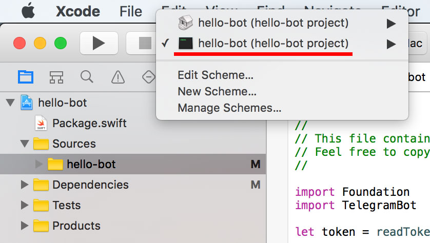
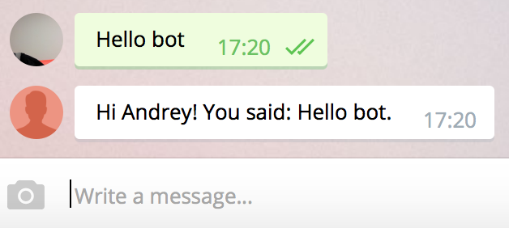

Creating a new bot
Create the project
Create a directory for the project, we'll call the bot todo-bot:
mkdir todo-bot
cd todo-bot
swift package init --type executable
We now have the following project structure:
├── Package.swift
├── Sources
│ └── todo-bot
│ └── main.swift
└── Tests
Edit Package.swift to look like this:
import PackageDescription
let package = Package(
name: "todo-bot",
products: [
// Products define the executables and libraries produced by a package, and make them visible to other packages.
.executable(
name: "todo-bot",
targets: ["todo-bot"]),
],
dependencies: [
// Dependencies declare other packages that this package depends on.
// .package(url: /* package url */, from: "1.0.0"),
.package(url: "https://github.com/zmeyc/telegram-bot-swift.git", .branch("dev")),
],
targets: [
// Targets are the basic building blocks of a package. A target can define a module or a test suite.
// Targets can depend on other targets in this package, and on products in packages which this package depends on.
.target(
name: "hello-bot",
dependencies: ["TelegramBotSDK"]),
]
)
Run swift build:
Fetching https://github.com/zmeyc/telegram-bot-swift.git
Fetching https://github.com/zmeyc/CCurl.git
Cloning https://github.com/zmeyc/telegram-bot-swift.git
Resolving https://github.com/zmeyc/telegram-bot-swift.git at dev
Cloning https://github.com/zmeyc/CCurl.git
Resolving https://github.com/zmeyc/CCurl.git at 0.0.2
Compile Swift Module 'TelegramBotSDK' (195 sources)
Compile Swift Module 'todo_bot' (1 sources)
Linking ./.build/x86_64-apple-macosx10.10/debug/todo-bot
Try running .build/x86_64-apple-macosx10.10/debug/todo-bot:
Hello, world!
Create Xcode project
Working from command-line without autocomplete is not very convenient. To create Xcode project, run:
swift package generate-xcodeproj
This will produce todo-bot.xcodeproj. Open it in Xcode and switch scheme to the bottom one:

Build the project and run it.
Create a simple bot
Edit Sources/main.swift to look like this:
import TelegramBot
let bot = TelegramBot(token: "TOKEN")
while let update = bot.nextUpdateSync() {
guard let from = message.from else { ... }
if let message = update.message, let text = message.text, let from = message.from {
bot.sendMessageAsync(chat_id: message.from.id,
text: "Hi \(from.first_name)! You said: \(text).\n")
}
}
fatalError("Server stopped due to error: \(bot.lastError)")
Replace TOKEN with the token obtained from BotFather.
Run swift build. If there are no compilation errors, run .build/x86_64-apple-macosx10.10/debug/todo-bot.
If you get fatal error: Unable to fetch bot information, verify that the token is correct.
Otherwise, the bot is ready to accept commands.
Find your bot in Telegram and send him something.

Congratulations, you've just created a simple bot!